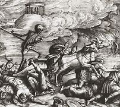
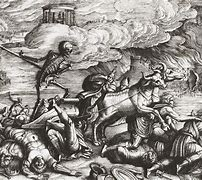

Patients typically developed painful buboes—swollen lymph nodes in the groin or armpits—alongside fever, chills, vomiting, and extreme fatigue. Without antibiotics, bubonic plague was fatal in 30% to 75% of cases within days, while pneumonic and septicemic forms were almost universally lethal
The dramatic population decline upended feudal societies. Labor shortages empowered surviving peasants and artisans to demand higher wages and better conditions, contributing to the decline of serfdom and reshaping Europe’s agrarian economy
 
